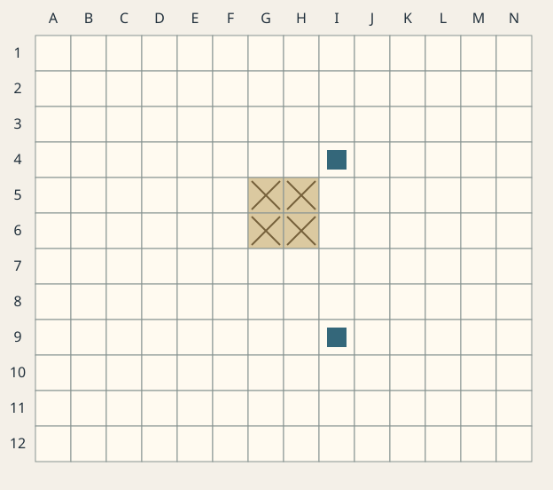

Одинаковые правила, разная история
Все карты совпадают с сеткой нативного пакета: 14 × 12, клетка — 5 футов. G5/H5/G6/H6 — трудная местность; I4/I9 — половинное укрытие. Остальные детали описания декоративны, пока ведущий не изменил поле штатно.
Расстановка и параметры
Герои в порядке списка встречи: B3, B4, B5, B6, C3, C4, C5, C6. Противники: L3, L4, L5, L6, M3, M4. Используйте только нужное число фигур.
Для 3 / 4 / 5 / 6 / 7 / 8 игроков: 2 / 3 / 3 / 4 / 5 / 6 противников, здоровье каждого 12 / 14 / 16 / 18 / 20 / 22. Защита 12; скорость 20 футов; одна ближняя атака +3, 1d4+1 дробящего урона, досягаемость 5 футов.
Перед запуском встречи герои должны находиться в её локации. После сыгранного перехода ведущий перемещает участвующих персонажей обычным действием приложения; герои в других местах автоматически в бой не попадают.
Враги — простая поддерживаемая модель. Мирные решения и ограничения сцены описаны отдельно; ведущий подтверждает их результат. После первого раунда напомните пути переговоров или отступления. Встречи не запускаются автоматически.
Кисти без заказа
Необязательно во второй сессии, третьей сцене: герои трогают открытую коробку зачарованных учебных кистей. Ведущий сначала описывает погоню за чистыми краями и предлагает мирный способ; схватка начинается только по его явному решению после выбора стола.
Цель и выходы
Освободить проход к сухим тканям и собрать выбранные ярлыки. Кисти — простые зачарованные инструменты, не разумные пленники. Их можно отогнать, отключить обычным прекращением встречи по решению ведущего или оставить рисовать ненужный лоскут. Уничтожать все кисти не требуется; отход за западный навес сохраняет доступ к материалам позднее.
Положить ненужный чистый лоскут в сухую рамку и освободить к нему путь. Кисти принимаются раскрашивать его; Пух спокойно закрывает коробку после работы. Это заявленное мирное решение без обязательной проверки. Можно также просто ждать за навесом, пожертвовав временем на декоративную пробу.
Поведение противников
Короткая деревянная кисть подпрыгивает на упругой щетине и норовит оставить смешные усы на пустом ярлыке. Её обычный удар описывается как тычок ручкой, без натуралистических травм.
Кисти двигаются к ближайшему участнику возле чистого лоскута и используют только обычную рукопашную атаку. Не применяют яд, захват, ослепление, порождение новых кистей или автоматическое движение предметов. Если герои уходят за навес, ведущий может завершить встречу: кисти остаются возле ткани. Никаких скрытых таймеров.
Размер группы
Нативные варианты: 3 игрока — 2 кисти по 12 HP; 4 — 3 по 14 HP; 5 — 3 по 16 HP; 6 — 4 по 18 HP; 7 — 5 по 20 HP; 8 — 6 по 22 HP. У всех AC 12, одна рукопашная атака +3, урон 1d4+1. При 3–4 игроках один доступный лоскут лежит у входа; при 5–6 есть две свободные дорожки; при 7–8 распределите сбор ярлыков, отвлечение, наблюдение и отход между парами. Мирная цель доступна любому составу.


Сетка 14×12, столбцы A–N, строки 1–12. Центральные F5–I8 заполнены мягкими обрезками и считаются трудной местностью. Корзины на C3, C9, L3 и L9 дают обычное укрытие. Западная дорожка A4–B9 ведёт под навес и позволяет отойти; восточный край M4–N9 свободен для лоскута-приманки. Кисти начинают во дворе у центральных корзин; рамка и ярлыки — обычные повествовательные предметы без автоматических эффектов.
Бумажные щёголи
Необязательно в пятой сессии, третьей сцене, во время показа съёмной каймы у прилавка Севры. Бумажные фигурки принимают пустые ярлыки за приглашение красоваться. Ведущий предлагает рамку-приманку до возможного включения подготовленной встречи; никакого автоматического нападения при входе нет.
Цель и выходы
Вернуть подписанные образцы с прилавка и дать Севре убрать пляшущую кайму в коробку. Щёголи — зачарованные бумажные вырезки без личности. Достаточно освободить рабочий проход; сбежать с образцами по южной дорожке или прекратить спор и договориться с Севрой столь же допустимо, как победить противников.
Поставить пустую рамку возле отдельного лоскута и попросить Севру напечатать туда простую танцующую дорожку. Щёголи занимают её как украшение, освобождая рабочие образцы. Севра делает это без оплаты за спасение и без обязательного броска. Можно вообще отложить показ каймы и вернуться к обычной печати.
Поведение противников
Плоская фигурка в нелепо огромной шляпе складывается и расправляется, стараясь попасть в любой красивый край. Обычная атака выглядит как хлопок бумажным веером.
Фигурки используют обычное перемещение и одну рукопашную атаку ближайшему участнику у прилавка. Они не летают по особым правилам, не создают копий, не крадут инвентарь и не накладывают состояния. При отходе героев Севра может закрыть коробку каймы, завершив встречу по решению ведущего; это повествовательный выход, не новая боевая команда.
Размер группы
Нативные варианты: 3 игрока — 2 фигурки по 12 HP; 4 — 3 по 14 HP; 5 — 3 по 16 HP; 6 — 4 по 18 HP; 7 — 5 по 20 HP; 8 — 6 по 22 HP. У всех AC 12, одна рукопашная атака +3, урон 1d4+1. При 3–4 игроках образцы лежат одной стопкой у входа; при 5–6 две пары могут освобождать разные стороны; при 7–8 четыре пары получают возврат образцов, приманку, связь с Севрой и свободный отход. Не добавлять вторую волну или новые способности.

Сетка 14×12, A–N и 1–12. Центральные F5–I8 покрыты пустыми бумажными лентами: трудная местность. Низкие сундуки на C3, C9, L3 и L9 дают обычное укрытие. Южные клетки D11–K12 образуют свободную дорожку к общему столу; рамку можно поставить у северного края. Щёголи начинают у центрального прилавка мастерской Севры. Никаких движущихся стен, падений или обязательного опасного прохода.
Завитки косого ветра
Необязательно в шестой сессии, второй сцене, после описанного сказочного порыва: несколько зачарованных бумажных завитков оживают среди проб. Ведущий сначала разрешает укрыться или отвлечь их пустым листом. Подготовленная встреча включается только явно и заменяет часть сцены.
Цель и выходы
Добраться с выбранной пробой или записью за сухую ширму. Не требуется спасти всё и победить каждый завиток. Готовая партия остаётся в закрытой корзине вне риска. Отход по западной дорожке завершает опасное сближение по решению ведущего; утраченный лист можно восстановить позднее.
Развернуть пустой ненужный лист у восточного края и спокойно отойти за ширму. Завитки собираются вокруг него, пока Круг снимает пробные флажки. Бросок не обязателен. Можно переждать ветер и собрать намокшие записи позже, приняв потерю одной декоративной пробы без потери ключевого знания.
Поведение противников
Широкая лента бумаги сворачивается в смешную пружину и подпрыгивает низко над помостом. Её обычный удар описывается как хлопок скрученным краем.
Завитки пользуются только обычным перемещением и рукопашной атакой ближайшему участнику на открытой части террасы. Они не толкают автоматически, не уносят персонажей, не меняют погоду и не действуют по скрытому таймеру. Ведущий завершает встречу, когда герои ушли за ширму или применили мирный способ; добивание не нужно.
Размер группы
Нативные варианты: 3 игрока — 2 завитка по 12 HP; 4 — 3 по 14 HP; 5 — 3 по 16 HP; 6 — 4 по 18 HP; 7 — 5 по 20 HP; 8 — 6 по 22 HP. У всех AC 12, одна рукопашная атака +3, урон 1d4+1. При 3–4 игроках выбирают один переносимый образец; при 5–6 распределяют запись, пробу и прикрытие; при 7–8 четыре пары получают эти задачи и подготовку мирного выхода. Укрытие и уход доступны без особого класса.

Сетка 14×12, A–N и 1–12. Центральные F5–I8 заняты спутанными сухими лентами и дают трудную местность. Ширмы и тяжёлые столы на C3, C9, L3 и L9 служат обычным укрытием. Западные A4–B9 ведут за сухой навес; восточные M4–N9 подходят для пустого листа. Завитки начинают у центральной сушильной верёвки. Край карты не означает обрыв, а ветер не добавляет автоматических атак, перемещений или урона.